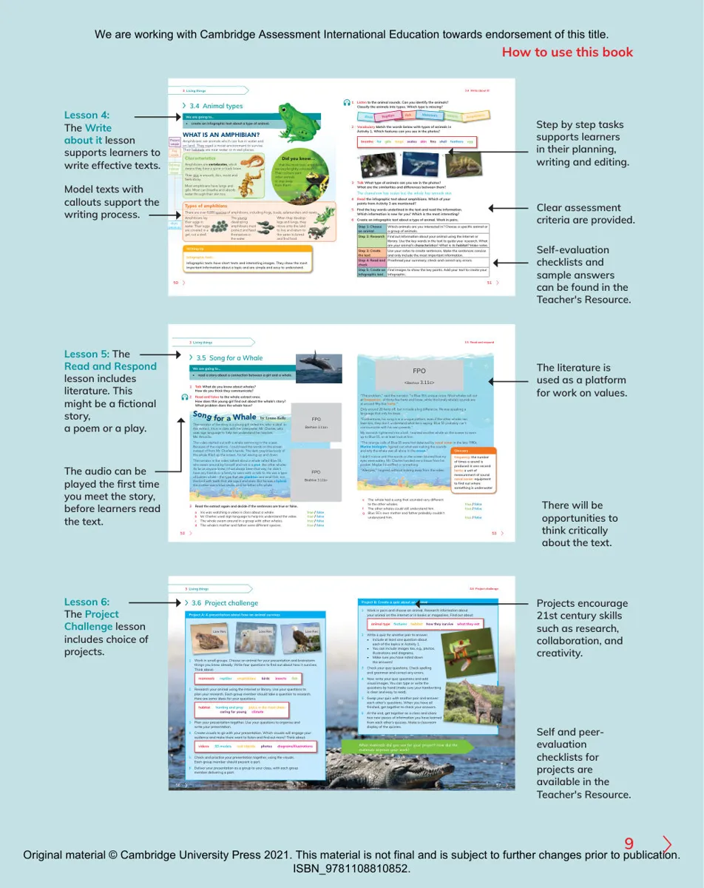

98.1 How to compare the size of angles9How to use this book3 Living things50513.4 Write about it! 3.4 Animal typesWe are going to...• create an infographic text about a type of animal.1 Listen to the animal sounds. Can you identify the animals? Classify the animals into types. Which type is missing?InsectsFishMammalsAmphibiansBirdsReptiles2 Vocabulary Match the words below with types of animals in Activity 1. Which features can you see in the photos?breathefur gillslungsscales skinfinsshell featherseggabc3 Talk What type of animals can you see in the photos? What are the similarities and differences between them?The chameleon has scales but thewhale has smooth skin.4 Read the infographic text about amphibians. Which of your points from Activity 3 are mentioned? 5 Find the key words underlined in the text and read the information. Which information is new for you? Which is the most interesting?6 Create an infographic text about a type of animal. Work in pairs.Step 1: Choose an animalWhich animals are you interested in? Choose a specific animal or a group of animals.Step 2: ResearchFind out information about your animal using the internet or library. Use the key words in the text to guide your research. What are your animal’s characteristics? What is its habitat? Make notes.Step 3: Create the textUse your notes to create sentences. Make the sentences concise and only include the most important information.Step 4: Read and checkProofread your summary; check and correct any errors.Step 5: Create an infographic textFind images to show the key points. Add your text to create your infographic.24Infographic textsInfographic texts have short texts and interesting images. They show the most important information about a topic and are simple and easy to understand. Writing tipWHAT IS AN AMPHIBIAN?Amphibians are animals which can live in water and on land. They need a moist environment to survive. Their habitats are near water or in wet places.Amphibians are vertebrates, which means they have a spine or back bone.CharacteristicsTheir skin is smooth, thin, moist and feels sticky.Most amphibians have lungs and gills. Most can breathe and absorb water through their skin too.bone.ndbe.Types of amphibiansThere are over 8,000 species of amphibians, including frogs, toads, salamanders and newts.Amphibians lay their eggs in water. Their eggs are covered in a gel, not a shell.The young developing amphibians must protect and feed themselves in the water.When they develop legs and lungs, they move onto the land to live and return to the water to breed and fi nd food.Key wordsPresent simpleshort sentencesDid you know… … that the most toxic amphibians are very brightly coloured? Their colours warn other animals to stay away from them!Defining relative clause3 Living things52533.5 Read and respond3.5 Song for a WhaleWe are going to...• read a story about a connection between a girl and a whale.1 Talk What do you know about whales? How do you think they communicate?2 Read and listen to the whole extract once. How does this young girl find out about the whale’s story? What problem does the whale have?253 Read the extract again and decide if the sentences are true or false.a Iris was watching a video in class about a whale. true /falseb Mr Charles used sign language to help Iris understand the video. true /falsecThe whale swam around in a group with other whales. true /falsed The whale’s mother and father were different species. true /falseFPOBeehive 3.11a>FPOBeehive 3.11b>eThe whale had a song that sounded very different to the other whales. true /falsefThe other whales could still understand him. true /falseg Blue 55’s own mother and father probably couldn’t understand him. true /falseFPO<Beehive 3.11c>“The problem,” said the narrator, “is Blue 55’s unique voice. Most whales call out at frequencies of thirty-fi ve hertz and lower, while this lonely whale’s sounds are at around fi fty-fi ve hertz.”Only around 20 hertz off, but it made a big difference. He was speaking a language that only he knew.“Furthermore, his song is in a unique pattern; even if the other whales can hear him, they don’t understand what he is saying. Blue 55 probably can’t communicate with his own parents.”My stomach tightened into a ball. I wanted another whale on the screen to swim up to Blue 55, or at least look at him.“The strange calls of Blue 55 were fi rst detected by naval sonar in the late 1980s. Marine biologists fi gured out what was making the sounds and why the whale was all alone in the ocean.”I didn’t notice until the words on the screen blurred that my eyes were watery. Mr. Charles handed me a tissue from his pocket. Maybe I’d sniffl ed or something.“Allergies,” I signed, without looking away from the video.frequency: the number of times a sound is produced in one secondhertz: a unit of measurement of soundnaval sonar: equipment to find out where something is underwaterGlossaryThe narrator of the story is a young girl called Iris, who is deaf. In this extract, Iris is in class with her interpreter, Mr. Charles, who uses sign language to help her understand her teacher, Ms. Amarillo.The video started out with a whale swimming in the ocean. Because of the captions, I could read the words on the screen instead of from Mr. Charles’s hands. The dark gray-blue body of the whale fi lled up the screen, his tail waving up and down.The narrator in the video talked about a whale called Blue 55, who swam around by himself and not in a pod, like other whales. As far as anyone knew, it had always been that way; he didn’t have any friends or a family to swim with or talk to. He was a type of baleen whale – the type that ate plankton and small fi sh, not the kind with teeth that ate squid and seals. But he was a hybrid. His mother was a blue whale, and his father a fi n whale.SongforaWhaleby Lynne KellyLesson 4: The Write about it lesson supports learners to write effective texts.Clear assessment criteria are provided. Model texts with callouts support the writing process.Lesson 5: The Read and Respond lesson includes literature. This might be a fictional story, a poem or a play.Lesson 6: The Project Challenge lesson includes choice of projects.Projects encourage 21st century skills such as research, collaboration, and creativity.Self and peer-evaluation checklists for projects are available in the Teacher's Resource.3 Living things3.6 Project challengeProject A: A presentation about how an animal survivesLow ResLow ResLow Res1 Work in small groups. Choose an animal for your presentation and brainstorm things you know already. Write four questions to fi nd out about how it survives. Think about:mammalsreptilesamphibiansbirds insectsfish2 Research your animal using the internet or library. Use your questions to plan your research. Each group member should take a question to research. Here are some ideas for your questions:habitathunting and preyplace in the food chaincaring for young climate3 Plan your presentation together. Use your questions to organise and write your presentation.4 Create visuals to go with your presentation. Which visuals will engage your audience and make them want to listen and fi nd out more? Think about:videos3D modelsreal objectsphotos diagrams/illustrations5 Check and practise your presentation together, using the visuals. Each group member should present a part.6 Deliver your presentation as a group to your class, with each group member delivering a part.Project B: Create a quiz about an animal1 Work in pairs and choose an animal. Research information about your animal on the internet or in books or magazines. Find out about:animal typefeatureshabitathow they survive what they eat2 Write a quiz for another pair to answer.• Include at least one question about each of the topics in Activity 1. • You can include images too, e.g., photos, illustrations and diagrams.• Make sure you have noted down the answers!3 Check your quiz questions. Check spelling and grammar and correct any errors.4 Now write your quiz questions and add visual images. You can type or write the questions by hand (make sure your handwriting is clear and easy to read).5 Swap your quiz with another pair and answer each other’s questions. When you have all fi nished, get together to check your answers.6 At the end, get together as a class and share two new pieces of information you have learned from each other’s quizzes. Make a classroom display of the quizzes. 3.6 Project challengeWhat materials did you use for your project? How did the materials improve your work?5756Step by step tasks supports learners in their planning, writing and editing. Self-evaluation checklists and sample answers can be found in the Teacher's Resource.The audio can be played the first time you meet the story, before learners read the text.The literature is used as a platform for work on values.There will be opportunities to think critically about the text.We are working with Cambridge Assessment International Education towards endorsement of this title.Original material © Cambridge University Press 2021. This material is not final and is subject to further changes prior to publication. ISBN_9781108810852.